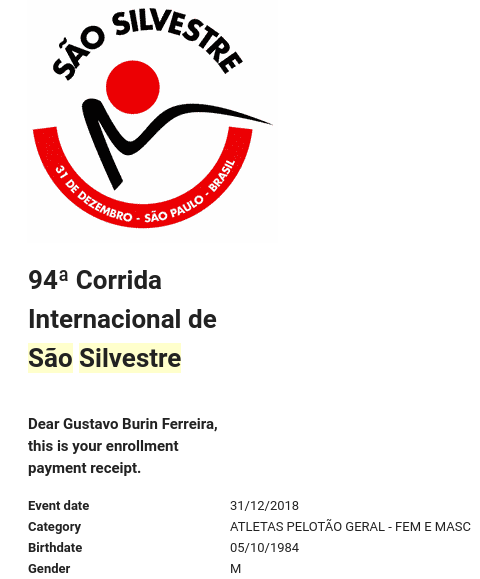

5 dicas para sobreviver à pós-graduação
(você não vai acreditar na número 4…)


1º capítulo publicado

Contato da FAPESP


Orientador: Tiago Bosisio QUENTAL
Co-orientador: Paulo R. GUIMARÃES Jr
1 - Conversa aberta com orientador(a)

2 - Work-life balance

4 - NADA

5 - Hobbies



“But I am very poorly today and very stupid and hate everybody and everything.”